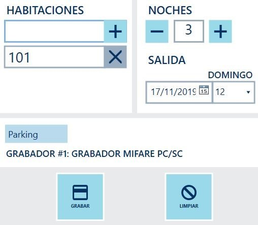
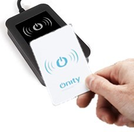

F5 Cliente Nuevo (Check-in)
1Introduce el número de habitación (se pueden incluir hasta 3 habitaciones en una misma tarjeta).
2Selecciona las noches con “- / +”, teclado o fecha de salida. Puedes cambiar la hora de salida (ej. late check-out).
3Marca autorizaciones adicionales si la instalación dispone de cerraduras con permisos especiales.
4Pulsa Grabar y presenta la tarjeta sobre el lector. Para copias en ese momento, vuelve a pulsar Grabar; si no, pulsa Completado.


⚠️ Aviso: Una tarjeta de Cliente nuevo anula la tarjeta anterior en cuanto se pasa por la cerradura.